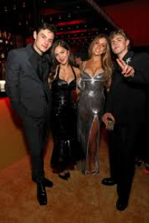
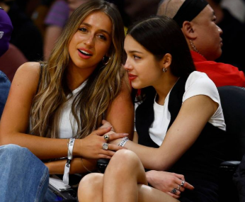

Olivia Rodrigo en Tate McRae zijn goede vriendinnen en succesvolle popartiesten, vaak samen gespot in Los Angeles. Ze leerden elkaar kennen via Instagram en steunen elkaar in hun carrières, waarbij McRae zelfs een cameo maakte in Rodrigo's "bad idea right?" videoclip. Ze delen een hechte vriendschap en passie voor muziek.


Tate McRae
Olivia Rodrigo